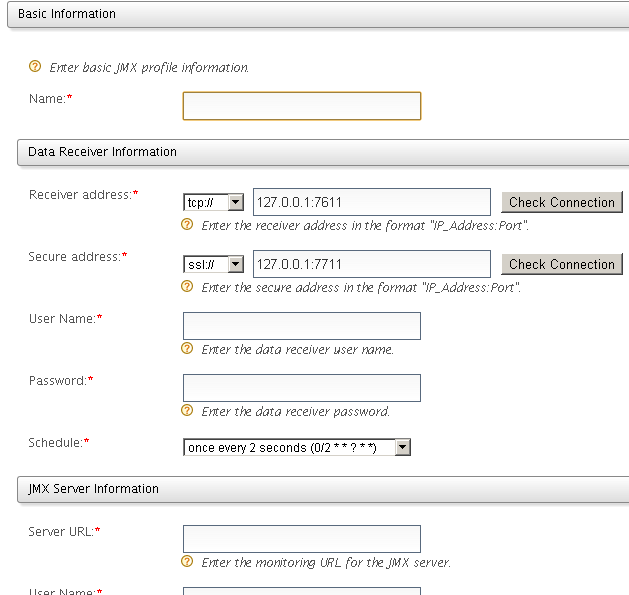

Setting Up JMX Agent for DAS
The JMX agent for DAS is used to monitor JMX attributes of a required JMX enabled server (Ex- Carbon based servers) and store the monitored data in DAS. The monitored data is sent to the DAS server using the Thrift API of DAS.
Using the JMX agent
- In the management console, select JMX Agent from the Configure menu.
- If there are any existing JMX monitoring profiles, they appear here. Each JMX monitoring profile is used to monitor a set of attributes from a single JMX server.
You can enable/disable monitoring of JMX attributes from here and also edit the monitoring profiles.
- To add a new monitoring profile, click Add Profile link and fill the required fields.

- In the Basic information section, enter a unique profile name.
- In the Data Receiver Information section,
- Receiver address - The address used to send the data to DAS
- Secure address - The address used to authenticate the data publishing request
- username - The username for the data publisher
- password - The password for the data publisher
- schedule - Can configure how often the attributes should be monitored using a cron expression
- In the JMX Server Information section,
- server URL - The JMX server URL. In this example we can use service:jmx:rmi://localhost:11111/jndi/rmi://localhost:9999/jmxrmi since we will be monitoring DAS it self.
- username - The username for the JMX server
- password - The password for the JMX server
- Click Load MBeans.
- Click an MBean from the list that loads to see its attributes list.
- Add required attributes to the list that is monitored by this profile and save the pofile. You can set an alias to easily identify the data in the Cassandra database.
- The newly-added JMX profile starts monitoring the attributes and publishing them to the Cassandra database. The data is published to the EVENT_KS with the name in org_wso2_bam_jmx_agent_<PROFILE_NAME> format. If you set an alias for the attribute, it will also be visible here.